2024
Yale Painting 2024 Exhibition Catalog (in-progress)
w/ Daedalus Li

Luiza Dale's Intro to Design class reader
Yale University: Buildings and Grounds 2024 (in-progress)


poster for kyle richardon's lecture


identity design for yale undergraduate exhibition: the host will let you in soon
w/ tomas hlava & julio correa

identity design for yale school of art mfa first year exhibition: why do i always fall out of bed at night?
w/ davy dai


laser cut acrylic glass for yale school of art mfa second year show: second thoughts
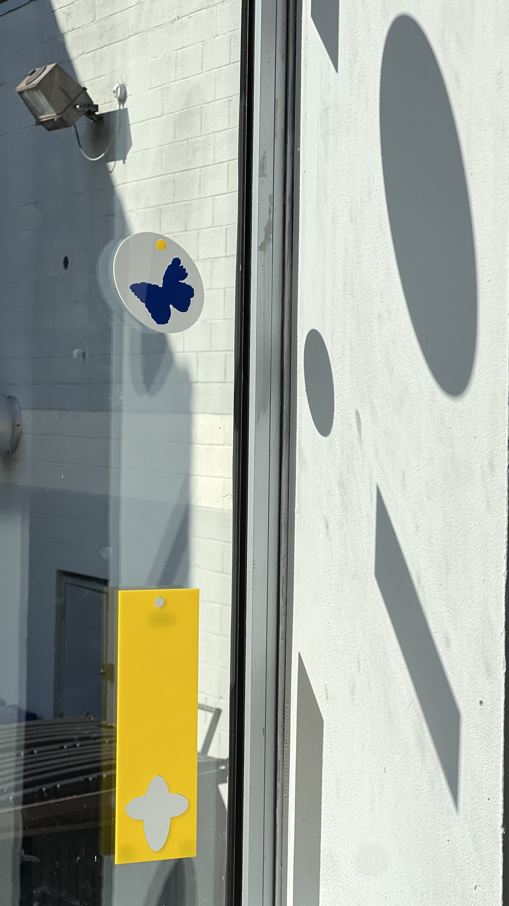2023
identity and website design for dannielle bowman
w/ kyle richardson
laser etched cd's
 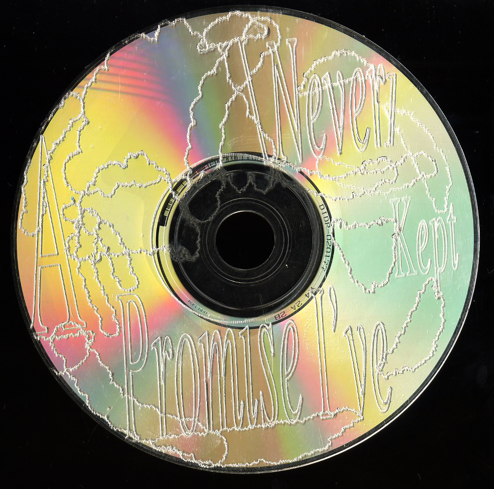
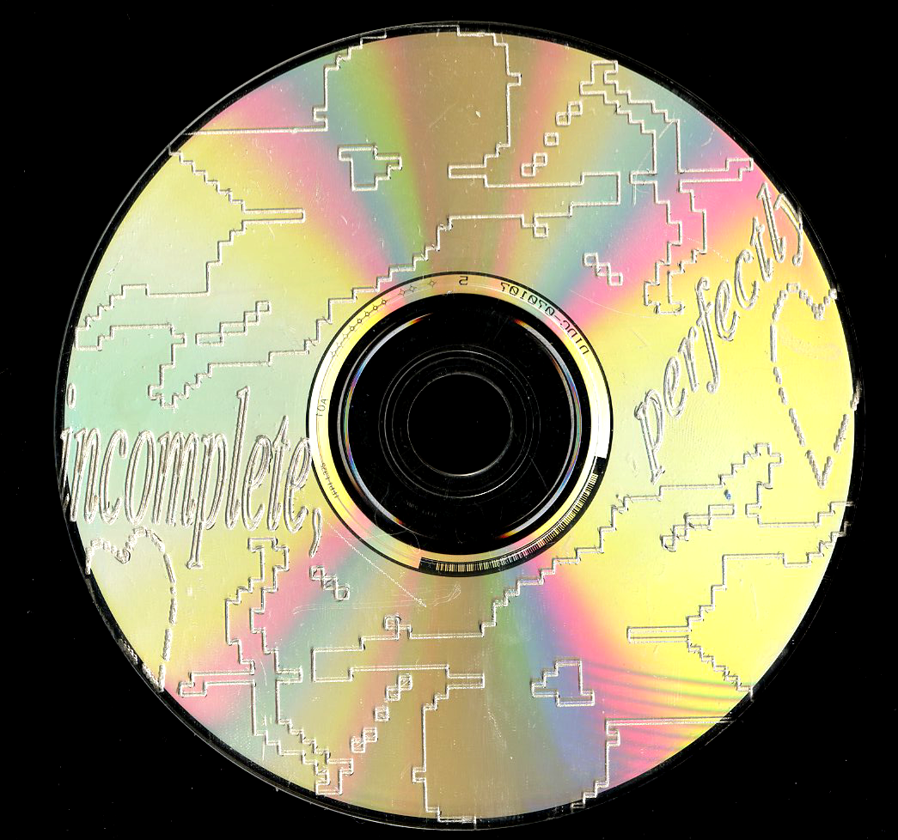
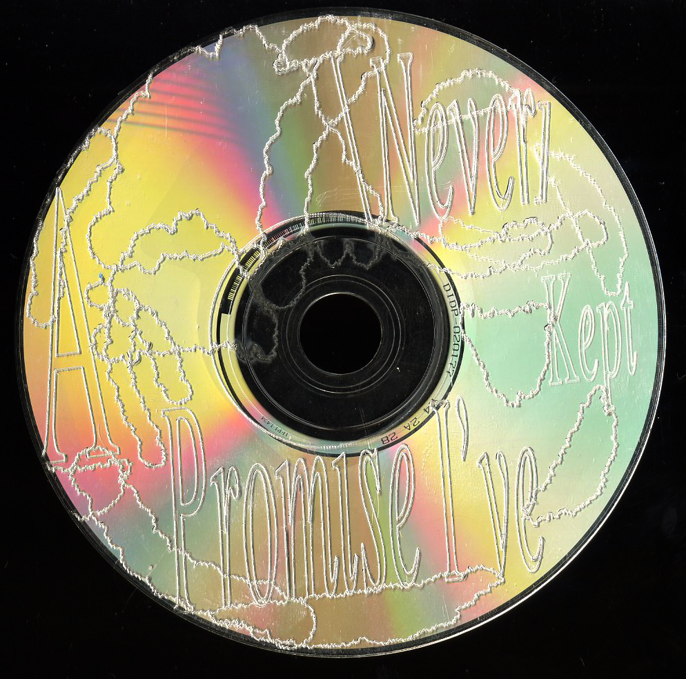
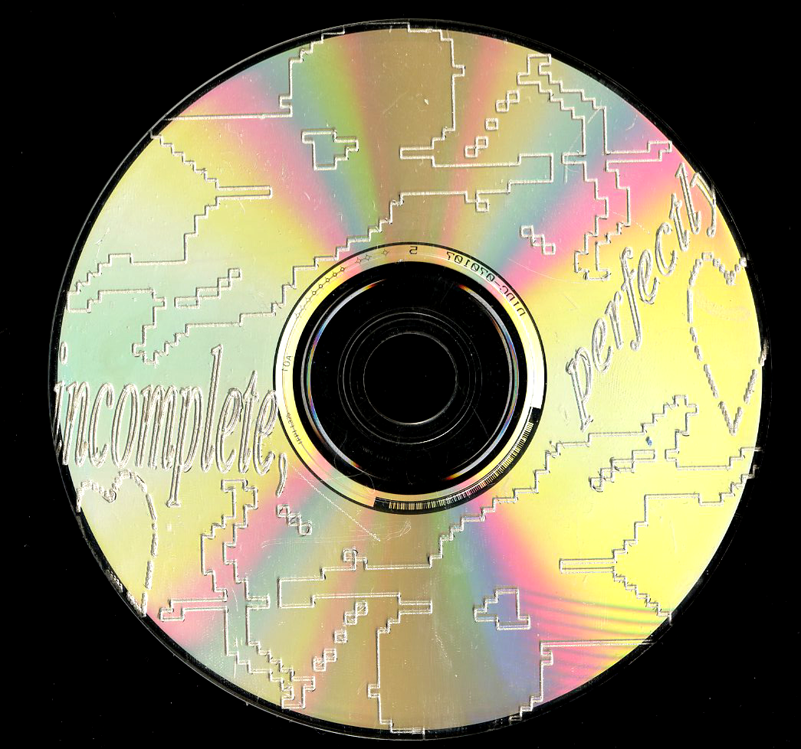
gossip theory publication
w/ kyle richardson

custom arial unicode symbol typeface

5x5" lenticulars prints


flyer for a screening of contempt directed by jean-luc godard
posters for yale photo lecture series

 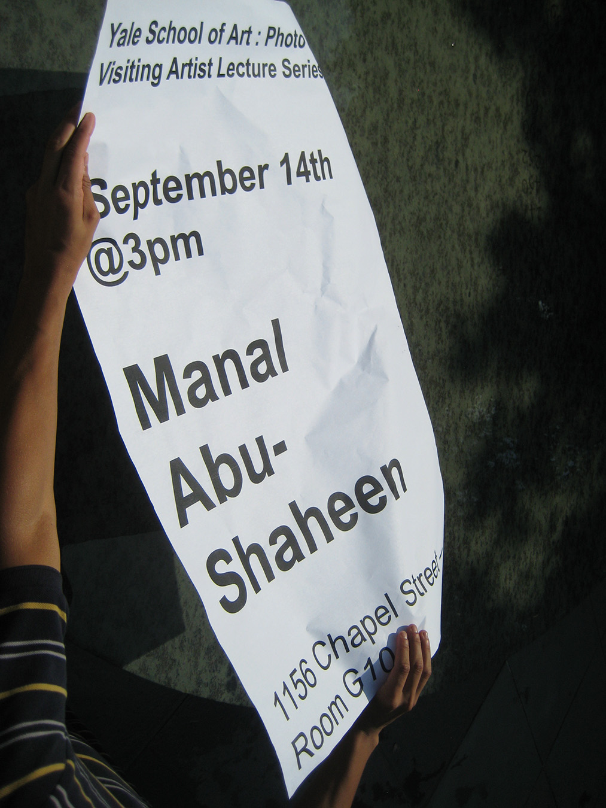
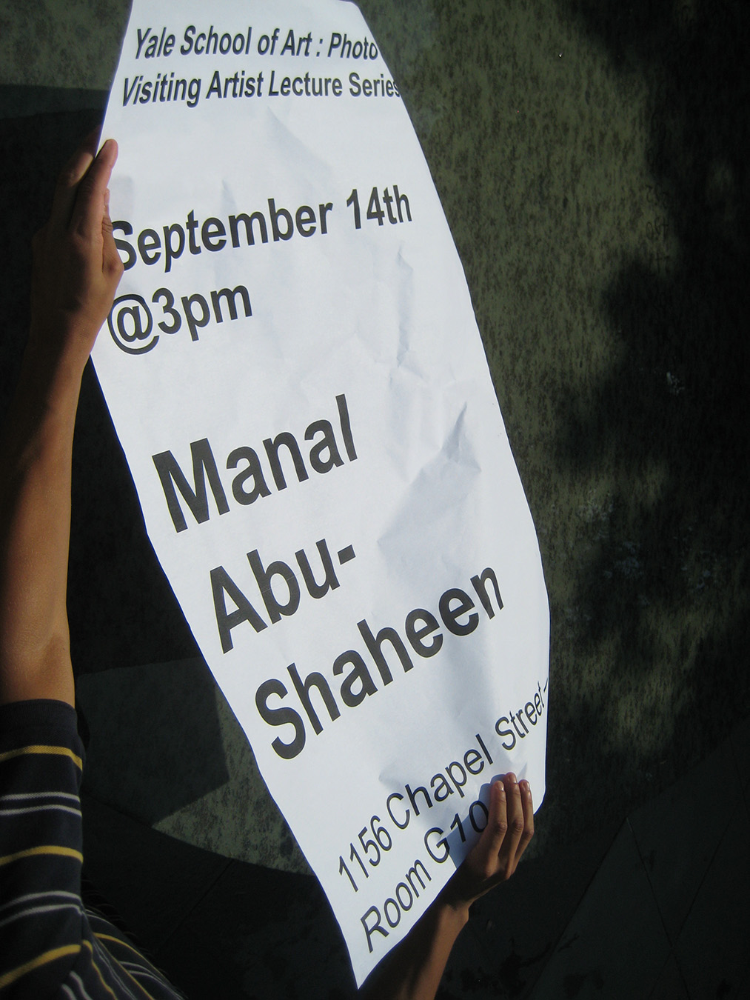
open call for yale architecture's paprika issue: fables
w/ siri lee
yale architecture's paprika: palate cleanser
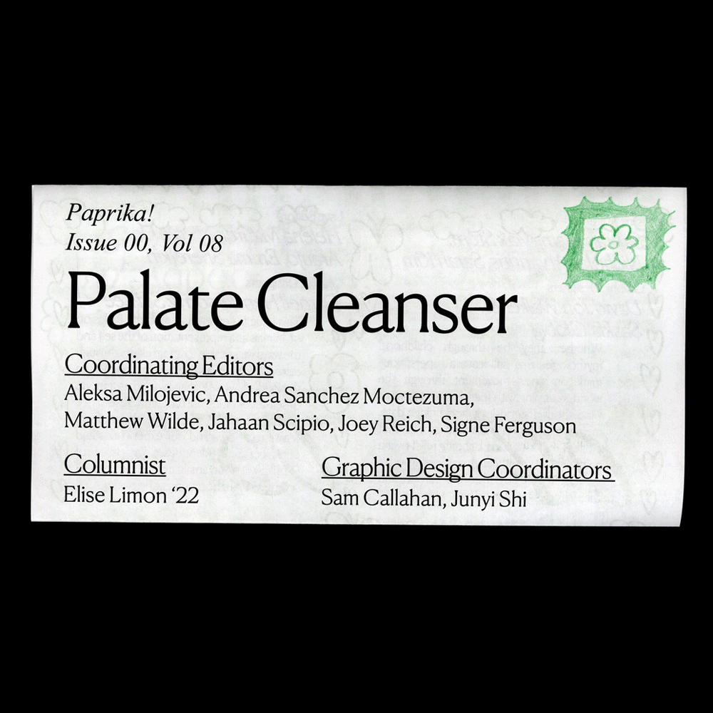poster for yale architecture social
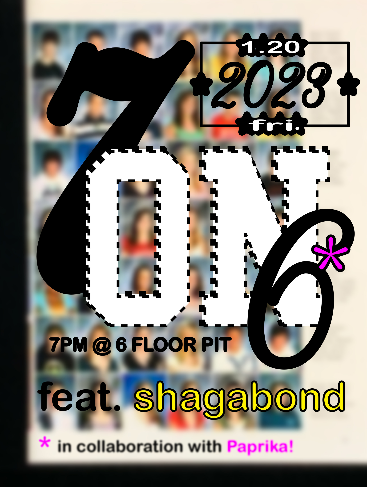logo for sojourner's for justice press
2022
identity and website design for yale urban media projects
w/ kyle richardson

flyer for yale school of art's end of year party

october 2022 news from new haven
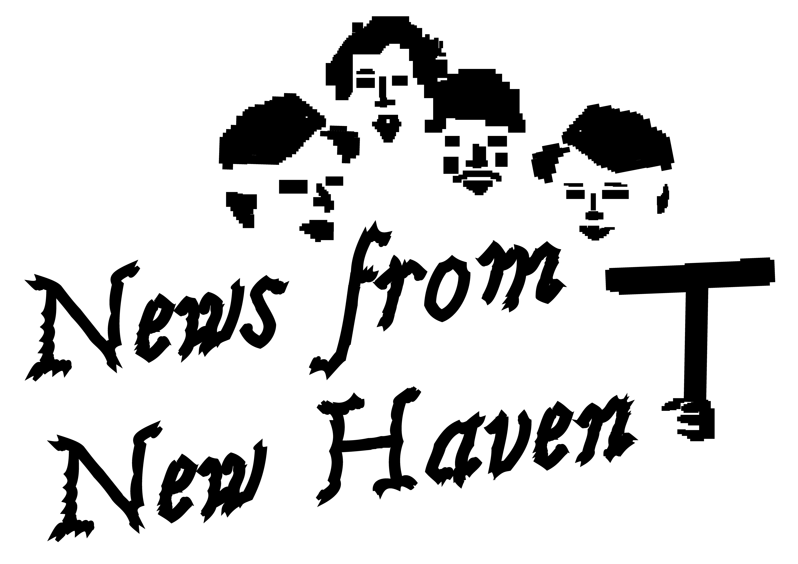5-color riso, japanese stab bound book
6-color riso print
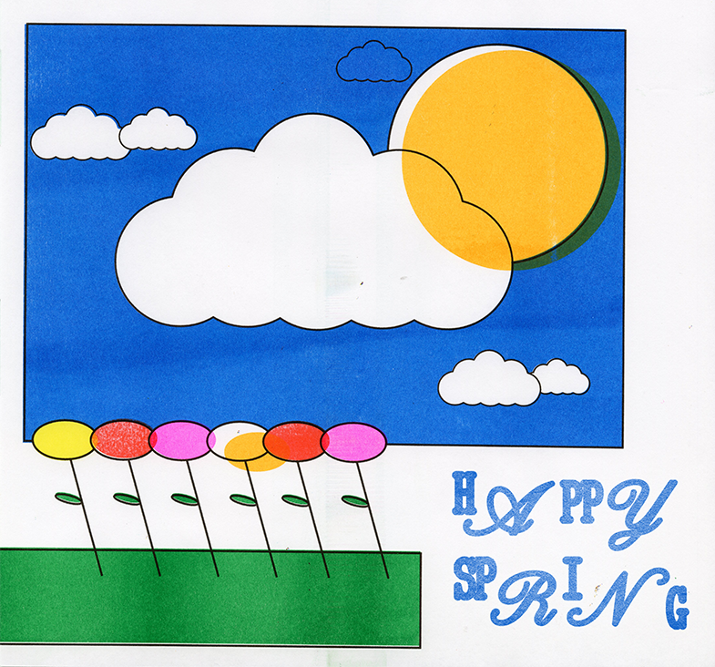two-color riso, saddle-stitched book

poster for kyle richardson and darnell henderson's gossip talk show: salted nuts
w/ kyle richardson
september 2021 news from new haven
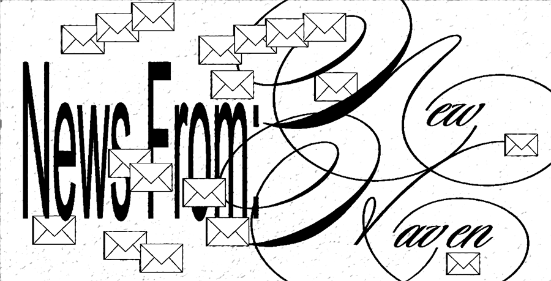11x4.25" saddle-stitched book